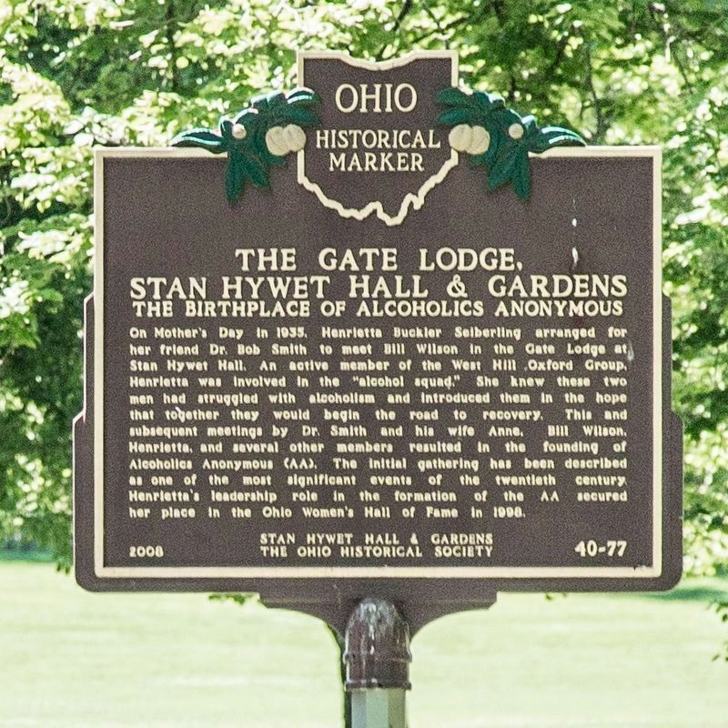

Año 1935 · Akron, Ohio
El Nacimiento de
Alcohólicos Anónimos
Dos fechas, separadas por veintinueve días, dieron origen a una Comunidad mundial. Un encuentro y un último trago que cambiaron la historia del alcoholismo.
Antecedentes · 1934–1935
En el Hospital Towns de Nueva York, durante su cuarta y última internación, Bill W. vivió una experiencia espiritual súbita que describió como "una gran luz blanca". A partir de ese momento permaneció sobrio para siempre. Esa experiencia sería, más adelante, el núcleo del mensaje que llevaría a otros alcohólicos.
Durante cerca de cinco meses, Bill intentó llevar el mensaje a otros alcohólicos en Nueva York. Trabajó con varios de ellos, pero ninguno logró mantenerse sobrio. La experiencia le enseñó que el alcohólico no se recupera trabajando solo; necesita la ayuda de otro alcohólico.
En Akron, Ohio —adonde Bill había viajado por negocios que fracasaron—, la señora Henrietta Seiberling lo pone en contacto con el Dr. Bob Smith, médico cirujano con veinte años de lucha contra el alcohol. Ese encuentro, el 12 de mayo, cambiaría la historia.
Bill y el Dr. Bob se conocen
El nombre galés de la mansión, Stan Hywet, significa “Aquí se encuentra la roca” — un detalle que Bill recordaría siempre como signo de una cita providencial.

El Dr. Bob bebe su último trago
Desde entonces, cada 10 de junio la Comunidad mundial celebra su aniversario, recordando que la sobriedad de un alcohólico encendió la chispa de la que hoy se han recuperado millones.
“Era el 10 de junio de 1935, que ahora se respeta como la fecha en que en realidad empezó A.A. La botella de cerveza que le dio Bill esa mañana fue su último trago.” ¡Transmítelo! · Capítulo 7
Fuentes consultadas
- Texto Básico — Semblanza del Dr. Bob: “El nacimiento de nuestra Comunidad data del primer día de su sobriedad permanente: el 10 de junio de 1935.”
- AA Llega a su Mayoría de Edad — Acontecimientos Significativos: “1935, Mayo. El Dr. Bob y Bill se conocen en Akron.” · “1935, 10 de Jun. El Dr. Bob bebe su último trago. Se funda Alcohólicos Anónimos.”
- ¡Transmítelo!, cap. 6 — La cita en la Gate Lodge de Stan Hywet Hall, el Día de las Madres.
- ¡Transmítelo!, cap. 7 — Relato del 10 de junio y la última cerveza del Dr. Bob.
Literatura aprobada por la Conferencia de Servicios Generales